Explore your treatment options.
Browse common dental procedures, understand what a consultation may involve, and request an appointment. Your dentist will confirm which options are appropriate for your individual needs.
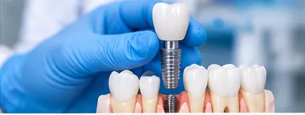
Dental Implants
Replace a missing tooth with a fixed tooth-replacement option supported by an implant in the jawbone.
Explore treatment ↗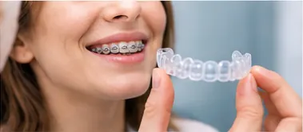
Orthodontics
Improve tooth alignment and bite relationships using braces or clear aligners.
Explore treatment ↗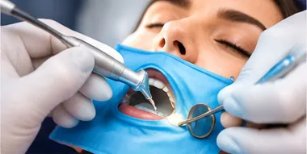
Root Canal Treatment
Treat infection or inflammation inside a tooth to help preserve the natural tooth.
Explore treatment ↗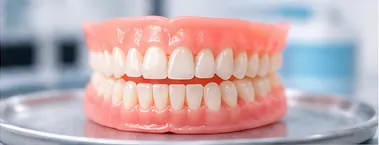
Dentures
Replace several or all missing teeth with removable or implant-supported prostheses.
Explore treatment ↗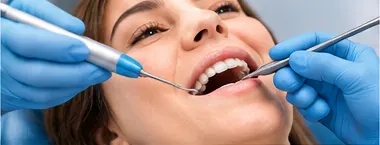
Periodontics / Gum Care
Prevent, diagnose and manage gum inflammation and supporting-tissue disease.
Explore treatment ↗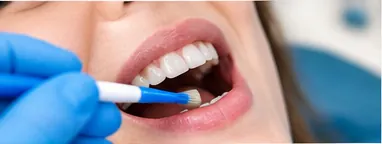
Teeth Cleaning
Professional removal of plaque and hardened tartar with personalized home-care guidance.
Explore treatment ↗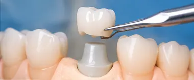
Dental Crowns
A custom-made cap that covers and protects a damaged or heavily restored tooth.
Explore treatment ↗Oral Surgery
Surgical dental procedures planned to address teeth, gums or supporting structures.
Explore treatment ↗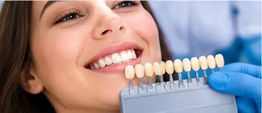
Veneers
Thin custom restorations bonded to the front surface of teeth to change their appearance.
Explore treatment ↗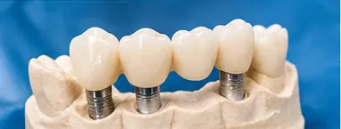
Bridges
A fixed restoration that replaces one or more missing teeth by attaching to supporting teeth or implants.
Explore treatment ↗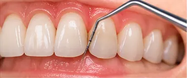
Dental Crowns & Caps
Protective restorations that cover a tooth to restore its form and strength.
Explore treatment ↗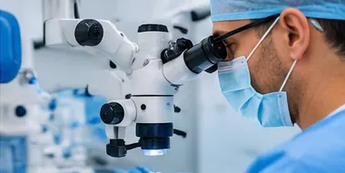
Endodontics
Specialist care for the dental pulp and tissues around the roots of teeth.
Explore treatment ↗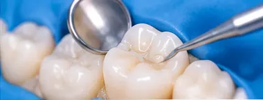
Tooth-Colored Fillings
Restore teeth affected by cavities or small fractures using a filling material.
Explore treatment ↗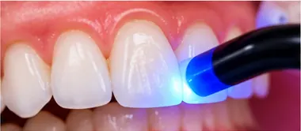
Teeth Whitening
Professional guidance and supervised options to lighten natural tooth shade.
Explore treatment ↗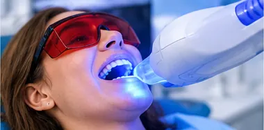
Dental Bonding
Tooth-colored composite material used to repair small chips or reshape selected teeth.
Explore treatment ↗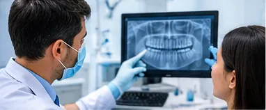
Tooth Extraction
Removal of a tooth when it cannot be predictably restored or when removal is otherwise recommended.
Explore treatment ↗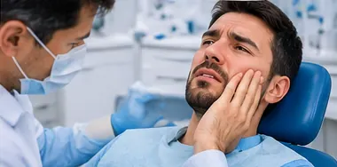
Wisdom Teeth
Assessment and care for third molars, including monitoring or removal when indicated.
Explore treatment ↗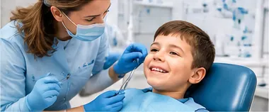
Pediatric Dentistry
Preventive and restorative dental care designed for infants, children and teenagers.
Explore treatment ↗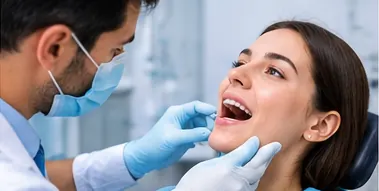
Emergency Dentistry
Prompt assessment for urgent dental pain, injury, swelling or broken teeth.
Explore treatment ↗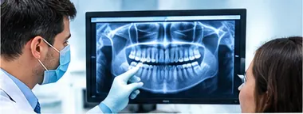
TMJ & Bite Care
Assessment of jaw-joint discomfort, muscle symptoms and bite-related concerns.
Explore treatment ↗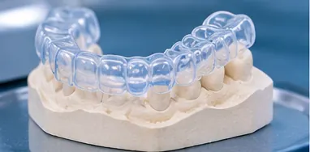
Night Guards
Custom oral appliances that may protect teeth from damage related to grinding or clenching.
Explore treatment ↗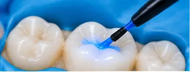
Dental Sealants
A thin protective coating placed in the grooves of back teeth to help prevent cavities.
Explore treatment ↗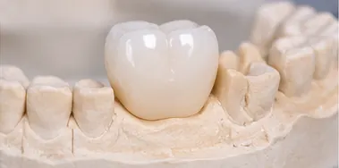
Fluoride Treatment
A professionally applied fluoride product used to help strengthen enamel and prevent cavities.
Explore treatment ↗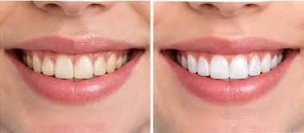
Smile Makeover
A coordinated plan combining suitable cosmetic and restorative treatments to improve smile appearance.
Explore treatment ↗No matching treatments. Try another search.
Educational information only. It is not a diagnosis or a substitute for advice from a qualified dental professional.